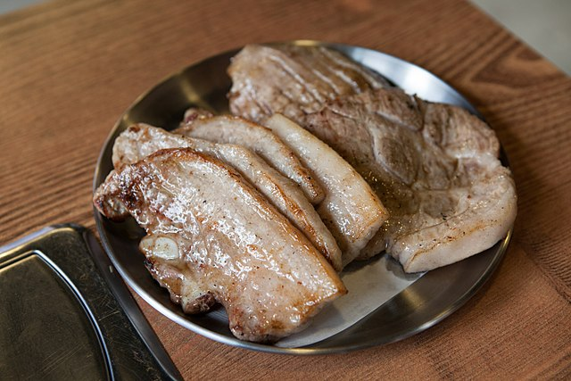

Herb Samgyupsal (Korean Grilled Pork Belly)

Ingredients
- 1 teaspoon dried thyme
- 1 teaspoon dried dill weed
- 1 teaspoon dried rosemary
- 1 teaspoon garlic powder
- 2 pounds pork belly strips
- 1 cup chopped kimchi
- 1 bulb garlic, cloves separated and peeled
- 3 scallions (pajori), chopped
Ssamjang Dipping Sauce
- 2 tablespoons doenjang (Korean soybean paste)
- 2 tablespoons gochujang (Korean hot peppre paste), or more to taste
- 1 tablespoon sesame oil
- 2 cloves garlic, minced
- 1 1/2 teaspoons sesame seeds
- 1 teaspoon rice wine
- 1 teaspoon brown sugar
Steps
- Mix thyme, dill, rosemary, and garlic powder together in a small bowl. Rub over both sides of each pork belly strip. Let stand at room temperature, about 15 minutes.
- Heat a large skillet over medium-high heat. Cook pork belly stripes until well browned, about 7 minutes per side. Transfer to a paper towel-lined plate, reserving some grease in the skillet cut stripes into bite-sized pieces.
- Saute kimchi, garlic cloves, and scallions in the reserevd grease over medium-high heat until starting to brown, about 3 minutse. Drain on a paper towel-lined plate.
- Mix doenjang, gochujang, sesame oil, minced garlic, sesame seeds, rice wine, and brown sugar in a bowl to make ssamjang sauce.
- Serve pork belly strips with kimchi, garlic, scallions, and ssamjang sauce.